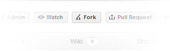
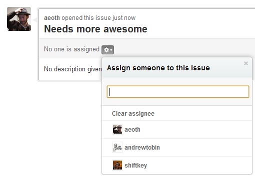
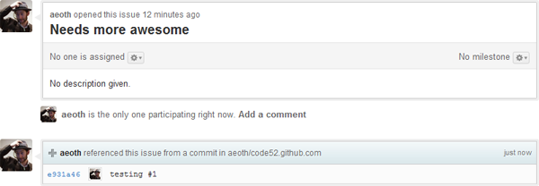
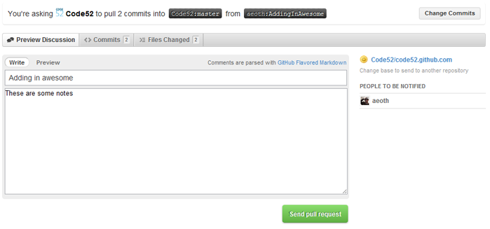
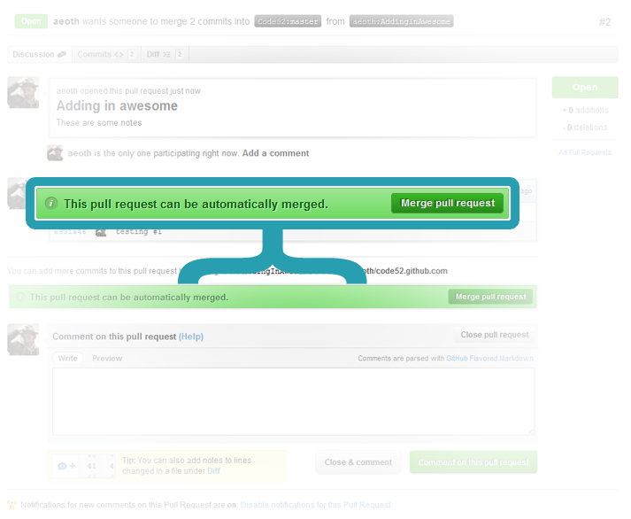

Contributing to Code52 projects
How do I contribute?
For the Code52 projects, we're adopting what is often referred to as "GitHub Flow". This doesn't exclusively apply to GitHub or even Git, but this is the example we're giving.
Note, this is different to "Git Flow", and although many of the principles are the same, it's much much simplier.
Step 1: Fork or branch the repo

At the top of every GitHub project is the magical fork button. If you don't have access to the repo, fork it to copy it over to your account. Once you fork it, you have full administrative privledges over your fork, so you can commit away.
If you do have write access to the repo, just skip to step 2.
Step 2: Pick and issue, any issue. Be an issue!
Normally you'd easily be able to make a fork, branch and commit up changes, but in Code52 projects we're moving very quickly and can quickly pick up people. It's a good idea to 'stake your claim' on a bug or feature to fix up so that two people aren't working on the same thing.

Go over to the original projects issue tab, and pick something that you'd like to work on. Don't see it there? Create an issue. If you can, assign the issue to yourself or leave a comment on the issue saying "I'll do this" - it needs to be explicitly stated, as just reporting an issue (be it a bug or feature) doesn't really let people know what you're doing.
Step 3: Create a branch and make some changes
Create a somewhat descriptive branch name on your fork, switch to it, make some changes. A descriptive name helps let us know what you are working on. Better yet, if an issue is created you can reference it in your commit notes by having "#IssueNumber" - ie,
#1 - I added more awesome in
If you do that, GitHub automatically creates a note in the issue tracker that you've referenced the issue, right down to the specific commit!

To create branches in git,
git branch MyBranchName
git checkout MyBranchName
Step 4: Send a pull request
It doesn't matter whether you've got full access to a repo or forked and have your own branch - you can pull request from your fork or from your branch back into the master branch. Even if you're the project "owner/maintainer", if there are others on the project, send a pull request and let somebody else accept/review it.
Why a pull request? One, that gives the project maintainer notification that something has been done, and two, GitHub's pull request interface is a fantastic way to do code reviews.
The pull request button is next to the fork button, up the top of a project.

Neat so far, right? It gets better. The pull request will notify the project maintainers, and present them with an awesome magical button.

Oh sure, there is extra information about the pull request - such as all the commits involved and full discussion capabilities, but at the end of hte day, the auto-merge button makes pull requests and GitHub flow trivial to do.